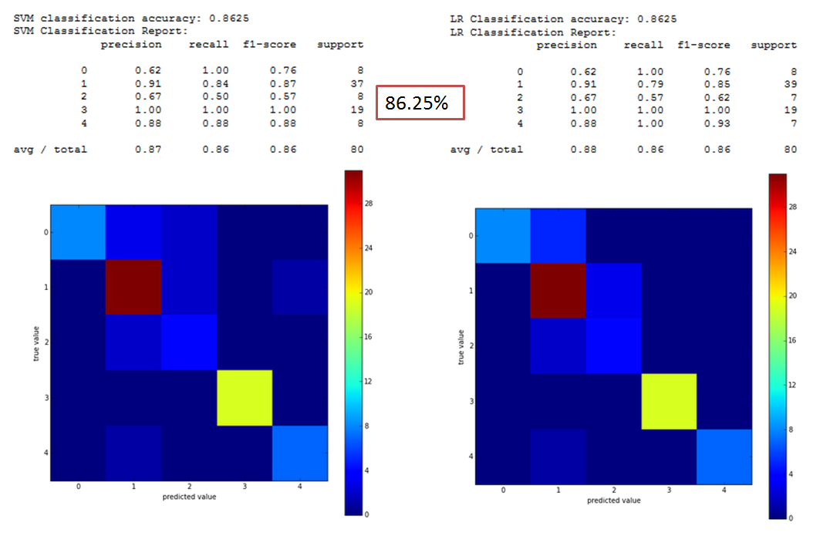

Classification
Part I
The first part of the project was performed using the document type texts.
Once the text inside each document is cleaned, we applied a topic model to obtain a categorization of documents based in the most frequent words present in them. The topic model used was LDA (Latent Dirichlet Allocation) for python.
LDA is a hierarchical Bayesian model that allows us to create topics from different texts based in the top words present within the texts.
Firstly, a vocabulary was created using all words present in texts. Secondly, the frequency each word appeared in each text was organized in a documents term matrix. This term matrix was then used as the input for the LDA model.
The LDA is a supervised algorithm so we had to establish the number of topics and the number of important words for the classification. After a manual supervision of the results, the final LDA model was created with 5 topics and 10 top words.
Concretely, the 5 topics were classified as:
- Topic 0 - Environment and territory
- Topic 1 - Health
- Topic 2 - Employment and Wellbeing (Social Security)
- Topic 3 - Legal matters
- Topic 4 - Media and audiovisual
However, now a question arises: Are these words really useful for topic classification?
In order to answer that, we apply machine learning techniques to assess whether these words are good classifiers. Multiclass Support Vector Machine (SVM) and Logistic Regression (LR) were the techniques used to evaluate the LDA model. 80% of the texts were used as training set and 20% as test set.
The results obtained were the following:
As it can be observed, both SVM and LR showed a 86.25% of accuracy.
Part II
The second part of the project was focused on analyzing the documents from specific persons. The aim was to compare two political groups: CiU and PSC.
These new texts were processed in the same way the previous texts were. Once texts were translated and cleaned, the SVM model previously created was applied to these texts. With this step, each document related to each person was classified into one of the five topics mentioned before.